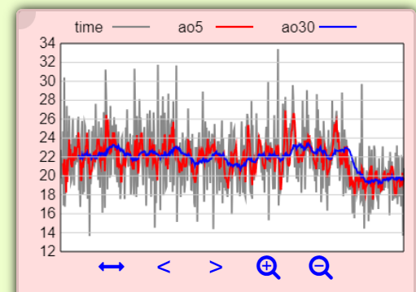
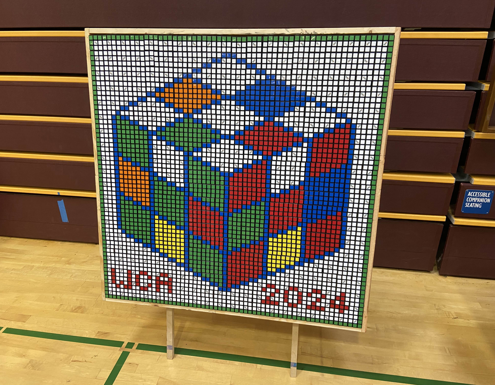
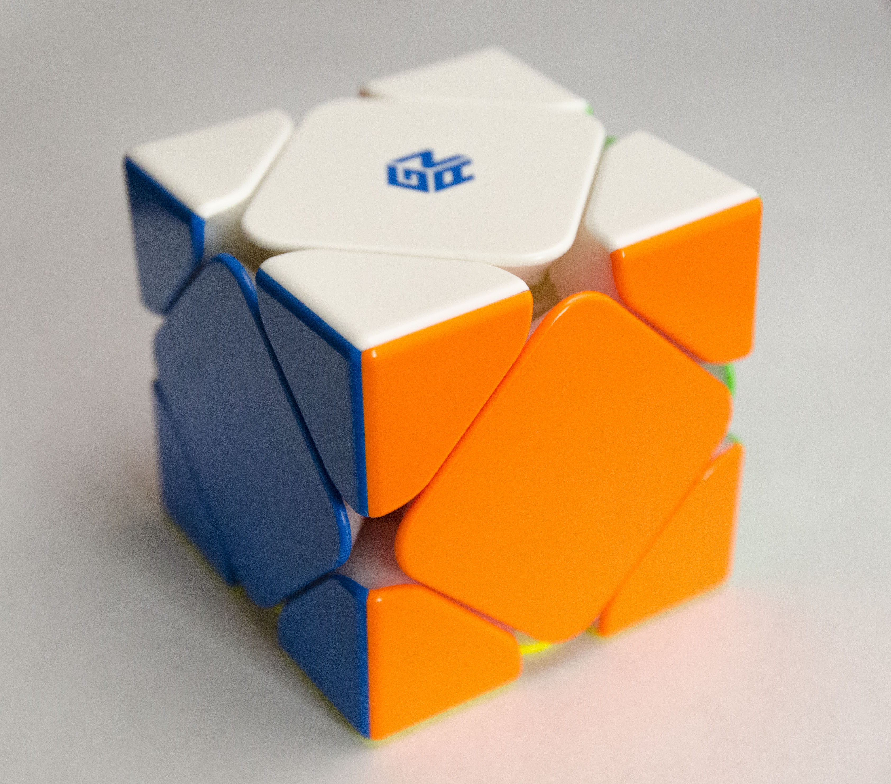
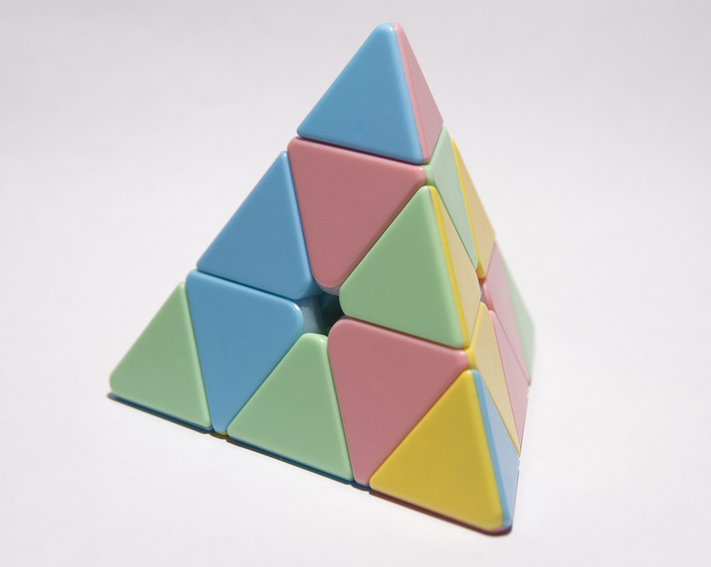
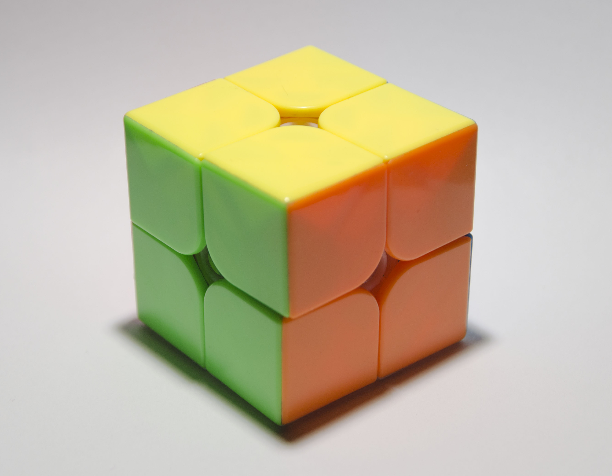
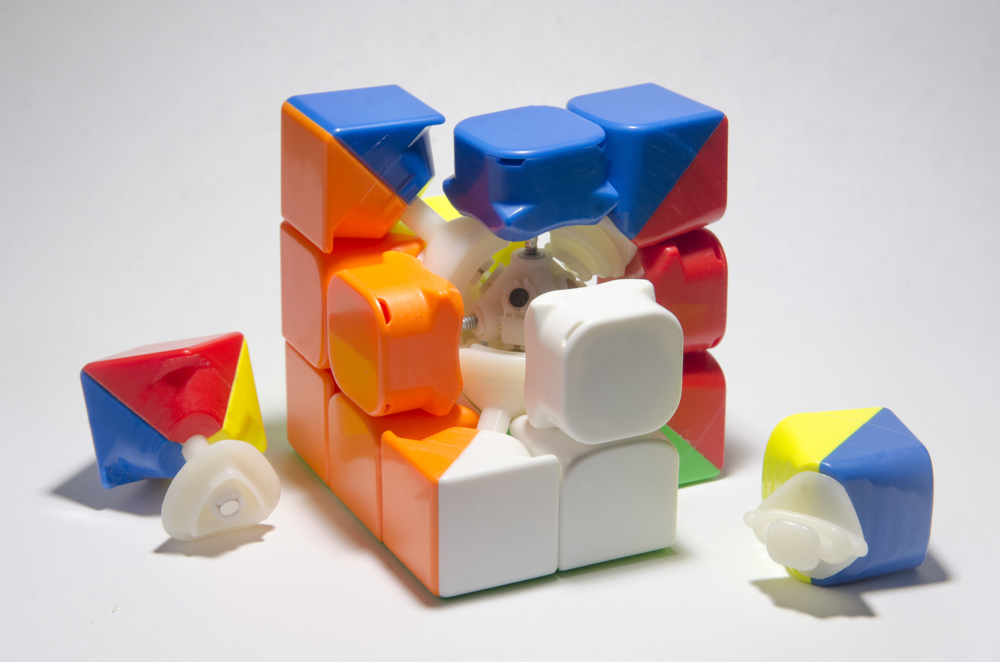

My cubing journey began in September of 2022 when a friend offered to teach me how to cube. I completed on my own for the first time a few days later, on October 4th. Ever since then, I have been continually practicing to get faster.
Some facts about me:
Things I'm working on: learning PLL, improving F2L execution, better inspection, practice lookahead.
PLLs learned: Aa Ab F Ga H Ja Jb Na Nb Ra Rb T Ua Ub V Y Z
PLLs not learned: E Gb Gc Gd
The next event I want to learn is: 3BLD!
2024 Jul 18: I am finally sub-20! Turns out that the secret was... cleaning and re-lubing my cube.
Current PBs: 19.54 (ao100), 18.90 (ao12), 17.48 (ao5).
2024 Jul 7: A much belated update regarding the competition and other cubing happenings. 3x3 was okay; I was on track for a 21 ao5 (which is about what I average at home) but unfortunately choked on the last solve. I did get a PR single, though! 2x2 was not particularly noteworthy, but competing in Skewb for the first time was quite fun. I probably should have practiced more though, seeing how I shaved ten whole seconds off my average in the days following the competition. Ended up skipping day 2 (pyraminx/3BLD) due to exhaustion.
I also helped build a cube mosaic for the first time!
2024 Jun 14: Signed up for Bay Area Speedcubin' 63! This time, I'll be trying three new events (3BLD, OH, and Skewb) in addition to 2x2/3x3/pyra. I've gotten decently comfortable with Skewb and am averaging about 30 seconds, but my OH solves are just excruciating and I haven't actually learned 3BLD yet, so...
2024 Mar 31: Went to another cubing competition, Bay Area Speedcubin' 59! I mainly went since I wanted to record my first official 2x2 and Pyraminx times; I haven't really gotten much faster at 3x3 since my last comp, so I wasn't expecting much in that department. I ended up doing pretty poorly in 3x3 anyways due to nerves, but 2x2 and Pyra were pretty fun. I also got to meet Tomas Rokicki, notable cube mathematician and part of the team that proved God's number to be 20.
Thoughts on the competition itself: the new Timebase system they were testing felt a little flaky, and in fact I ended up getting an extra for 3x3 due to a malfunction during inspection. The old method of paper scorecards definitely has its problems, and I feel like if it can live up to its promises Timebase would be a big improvement, but it's not quite there yet. I did very much appreciate the choice to run a stationary competition (you do all your solves at the same station). Given the vast confusion that comes with everyone running around, this feels like a no-brainer decision.
Overall: pretty good experience. I had a wonderful time judging and chatting with competitors in between solves. This comp has motivated me to practice until I average sub-20, so I am now on the battle path!
2024 Mar 19: First cubing update in forever: I got a Skewb! It was a much-delayed Secret Santa gift—long story. Anyways, I haven't formally learned how to solve it, but I devised a really crappy method by just tinkering with the puzzle for a while. Skewb is one of the events at the competition I've signed up for, but unfortunately I can't add it since registration closed, so I'll have to wait to get an official Skewb average.
(Picture looks a little different since my usual lens isn't with me.)
2023 Sep 10: Wow, it's been a long time since I've posted an update. Progress has been slow—very slow—but steady. My ao100 is at just over 21 seconds, so I think sub-20 is in reach. For reference, my best ao5 and ao12 are 18.35 and 19.65.
2023 Jun 12: From this day on I am officially a proud Pyraminx owner. I saw the puzzle on sale at Target and simply couldn't resist! The turning is pretty crappy, but nothing a little lube can't fix. After playing with it for a few days I've set and broken a few personal bests which I have recorded below.
2023 Mar 13: Two big accomplishments—sub-23 ao100 and a new PB of 12.71! I absolutely did not expect to beat my previous record by such a wide margin. The scramble was ridiculously lucky (XCross and two free pairs after solving the first). I've linked the reconstruction in my PB table.
2023 Feb 13: Just got my first ever sub-20 ao5! The times were: 19.26 18.77 19.88 (21.60) (16.52).
Noisy celebration followed. It was a very exciting achievement; I think I'll be averaging under 20 seconds consistently soon.
2023 Feb 10: My YJ MGC 2x2 just arrived!
Practicing 2x2 was fun, although going back to 3x3 felt extremely weird.
2023 Feb 8: Got a crazy new PB of 14.97. This solve was quite lucky—I got an unplanned XCross in 5 moves. Reconstruction is linked in my PB table.
2023 Feb 2: Took a couple shots of my 3x3 for an ongoing project. Scandalous!!
2023 Jan 22: I went to my first competition recently!
Highlights: getting my Mirror cube signed by none other than Max Park!
Here is a list of my PBs and when they were achieved.
| Date | Time |
|---|---|
| 2022 Oct 5 | 1:52.20 |
| 2022 Oct 10 | 1:03.57 |
| 2022 Oct 12 | 56.78 |
| 2022 Oct 14 | 50.77 |
| 2022 Oct 17 | 48.37 |
| 2022 Oct 19 | 42.40 |
| 2022 Oct 20 | 39.93 |
| 2022 Oct 27 | 39.00 |
| 2022 Oct 29 | 35.45 |
| 2022 Oct 31 | 30.93 |
| 2022 Nov 5 | 28.08 |
| 2022 Nov 12 | 26.88 |
| 2022 Nov 13 | 24.83 |
| 2022 Nov 14 | 23.35 |
| 2022 Nov 17 | 21.31 |
| 2022 Nov 21 | 20.80 |
| 2022 Nov 22 | 20.01 |
| 2022 Dec 5 | 19.18 |
| 2022 Dec 27 | 18.85 |
| 2022 Dec 28 | 18.29 |
| 29 Dec 2022 | 16.82 |
| 2023 Jan 3 | 16.11 |
| 2023 Jan 8 | 15.18 |
| 2023 Feb 8 | 14.97 |
| 2023 Mar 13 | 12.71 |
| Date | Time |
|---|---|
| 2023 Jul 22 | 1:29.88 |
| 2023 Sep 12 | 1:08.96 |
| 2024 Jun 14 | 46.14 |
| Date | Time |
|---|---|
| 2023 Feb 10 | 3.31 |
| Date | Time |
|---|---|
| 2023 Jun 20 | 8.83 |
| Date | Time |
|---|---|
| 2024 Mar 19 | 54.48 |
| 2024 Jun 13 | 18.42 |
| 2024 Jun 14 | 12.49 |
| 2024 Jun 24 | 5.08 |
| Date | Time |
|---|---|
| 2022 Dec 28 | 30.19 |
| 2024 Jun 18 | 24.95 |
© 2022 Adrian Zhang